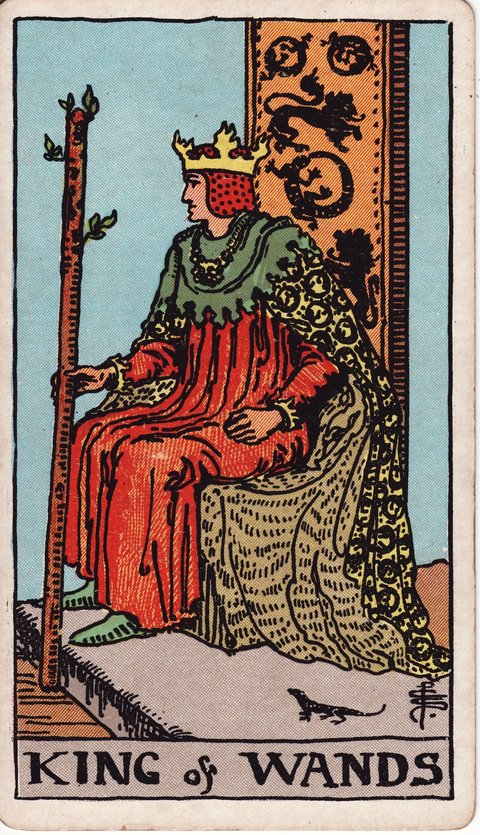

완드 · 타로 카드 백과사전
완드 킹

정방향
키워드: 대담한 비전 · 타고난 리더십 · 확신에 찬 결단 · 지형을 읽는 안목 · 무리를 모으는 힘 · 흔들림 없는 결단력
조언: 큰 그림을 믿고 확신을 가진 채 과감하게 결단을 내려보세요.
연애운
솔로
확신을 갖고 적극적으로 다가가면 좋은 인연을 만들 수 있는 시기입니다. 든든한 모습이 상대에게 신뢰감을 줄 수 있어요.
커플
확신을 갖고 관계를 이끌어가는 든든한 시기입니다. 미래에 대한 큰 그림을 함께 그려보는 대화를 나눠보세요.
재물운
소비
확신을 갖고 계획적으로 지출을 결정하는 시기입니다. 큰 그림을 그리며 필요한 곳에 과감히 투자해보세요.
투자
대담한 결단으로 재정적 성과를 이끌어내는 시기입니다. 확신이 선 곳에는 자신 있게 자금을 투입해보세요.
취업운
구직
확신에 찬 태도로 원하는 자리에 도전하는 시기입니다. 리더의 자질을 보여줄 수 있는 자리를 노려보세요.
이직
큰 그림을 그리며 리더십을 발휘하는 시기입니다. 조직을 이끄는 자리로의 도약을 자신 있게 준비해보세요.
직장운
팀워크
팀 전체가 나아갈 방향을 큰 그림으로 제시하는 리더십이 빛을 발하는 시기입니다. 명확한 비전 제시가 팀에 방향을 줄 수 있어요.
개인성과
굵직한 프로젝트를 총괄하며 존재감을 확실히 드러내는 시기입니다. 실무자들에게 권한을 적절히 위임하면 성과가 더 커질 수 있어요.
사업운
창업준비
대담한 비전으로 사업을 성공적으로 이끄는 시기입니다. 확신을 가진 방향으로 과감하게 투자해보세요.
운영중
큰 그림을 그리며 사업을 안정적으로 이끄는 시기입니다. 리더십을 발휘해 조직 전체를 이끌어가 보세요.
학업운
시험준비
명확한 목표를 세우고 이끌어가는 학습 태도가 돋보이는 시기입니다. 확신을 갖고 계획한 대로 밀고 나가보세요.
진로고민
큰 그림을 그리며 진로를 확신 있게 결정하는 시기입니다. 장기적인 비전을 갖고 자신 있게 나아가세요.
건강운
신체
확고한 의지로 건강 관리를 이끌어가는 시기입니다. 목표를 정하고 흔들림 없이 실천해보세요.
정신
큰 그림을 그리는 안정된 마음이 자신감으로 이어지는 시기입니다. 당장의 작은 문제에 일희일비하지 않고 장기 목표를 자주 되새기면 그 여유가 유지됩니다.
대인관계운
새로운 인연
든든하고 확신에 찬 태도가 새로운 사람들에게 신뢰감을 주는 시기입니다. 자신감 있는 태도로 다가가면 폭넓은 인맥으로 이어질 수 있어요.
기존 관계
주변 사람들과의 관계에서 든든한 구심점 역할을 하게 되는 시기입니다. 리더십 있는 모습으로 주변에 신뢰를 줄 수 있어요.
명예운
대담한 리더십으로 존경과 명예를 얻는 시기입니다. 확신에 찬 행보가 주변의 신뢰로 이어집니다.
이사운
확고한 비전으로 이동을 성공적으로 이끄는 시기입니다. 큰 그림을 그리며 자신 있게 결정을 내려보세요.
자식운
큰 그림을 그리며 아이의 미래를 이끄는 시기입니다. 든든한 리더십으로 아이에게 방향을 제시해주세요.
역방향
키워드: 독단적 태도 · 성급한 결정 · 마찰 · 고집스러운 판단 · 예상 밖 반발 · 닫힌 귀
조언: 밀어붙이기 전에 다른 사람의 의견에도 귀를 기울여보세요.
연애운
솔로
자신감이 지나쳐 상대를 부담스럽게 할 수 있습니다. 이끌려고만 하지 말고 상대의 속도도 존중해보세요.
커플
독단적인 태도가 관계에 부담을 줄 수 있습니다. 모든 결정을 혼자 내리려 하지 말고 상대와 상의하세요.
재물운
소비
무리한 결정이 재정적 마찰을 만들 수 있습니다. 독단적인 판단보다 가족이나 전문가의 조언도 참고하세요.
투자
성급한 투자 결정이 손실로 이어질 수 있습니다. 확신이 앞서더라도 다른 의견을 들어보는 신중함이 필요합니다.
취업운
구직
지나친 자신감이 오히려 거만함으로 비칠 수 있습니다. 겸손한 태도로 접근하는 것이 더 좋은 인상을 남깁니다.
이직
독단적으로 밀어붙이다 주변과 갈등이 생길 수 있습니다. 새로운 자리를 결정하기 전에 다양한 의견을 들어보세요.
직장운
팀워크
회의에서 자기 주장만 관철하려다 팀원들이 하나둘 입을 닫고 있을 수 있습니다. 침묵이 길어지기 전에 먼저 의견을 물어보는 자리를 만들어보세요.
개인성과
지나친 자기주장이 동료와의 마찰로 이어질 수 있습니다. 확신이 있어도 상대의 말에 귀 기울여보세요.
사업운
창업준비
독단적으로 밀어붙인 사업 확장이 투자자나 공동창업자와의 마찰로 번질 수 있습니다. 큰 결정일수록 이사회나 파트너와 미리 상의하는 절차를 거치세요.
운영중
독단적인 운영 방식이 직원들과의 갈등으로 이어질 수 있습니다. 일방적인 지시보다 소통하는 리더십이 필요합니다.
학업운
시험준비
지나치게 고집스러운 방식이 발전을 막을 수 있습니다. 다른 학습 방법도 열린 마음으로 받아들여보세요.
진로고민
독단적인 진로 결정이 나중에 후회로 이어질 수 있습니다. 주변의 현실적인 조언에도 귀를 기울여보세요.
건강운
신체
완고한 태도로 필요한 변화를 거부하고 있을 수 있습니다. 전문가의 조언을 받아들이는 유연함도 필요합니다.
정신
독단적인 생각이 오히려 스트레스를 키울 수 있습니다. 모든 것을 통제하려는 마음을 조금 내려놓아보세요.
대인관계운
새로운 인연
새로 알게 된 사람을 처음부터 이끌려고만 하면 부담스러운 인상을 줄 수 있습니다. 알아가는 단계에서는 조언보다 질문을 던지는 편이 관계에 도움이 됩니다.
기존 관계
주변 사람들을 이끌려는 마음이 지나쳐 통제처럼 느껴질 수 있습니다. 상대의 의견도 존중하는 여유를 가져보세요.
명예운
독단적인 태도가 평판에 부정적 영향을 줄 수 있습니다. 겸손하게 다른 의견을 수용하는 모습을 보여주세요.
이사운
독단적인 결정이 이동 과정에서 마찰을 만들 수 있습니다. 가족의 의견도 충분히 반영해 결정하세요.
자식운
독단적인 태도가 아이와의 갈등으로 이어질 수 있습니다. 아이의 생각도 존중하며 대화로 풀어가세요.
같은 슈트: 완드 에이스 · 완드 2 · 완드 3 · 완드 4 · 완드 5 · 완드 6 · 완드 7 · 완드 8 · 완드 9 · 완드 10 · 완드 시종 · 완드 기사 · 완드 퀸 · 완드 킹
홈에서 직접 카드 뽑아보기 ↗